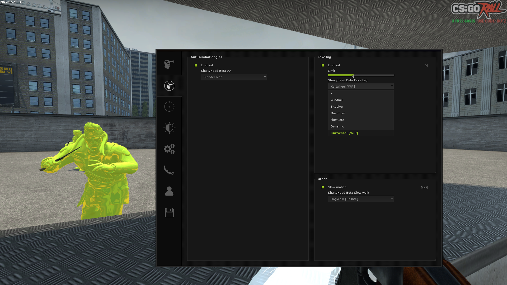
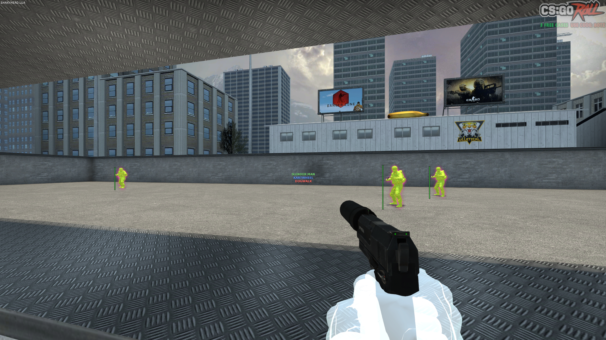
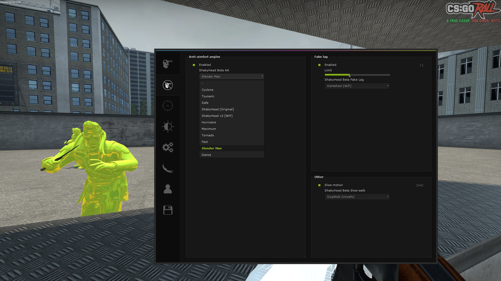
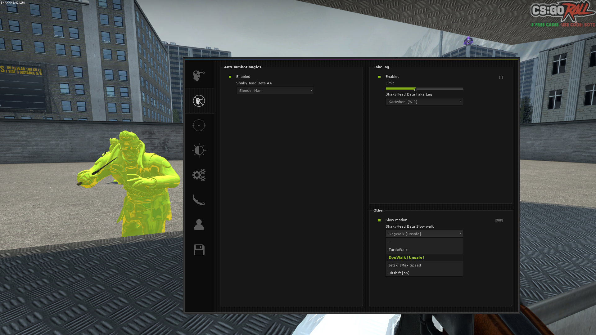
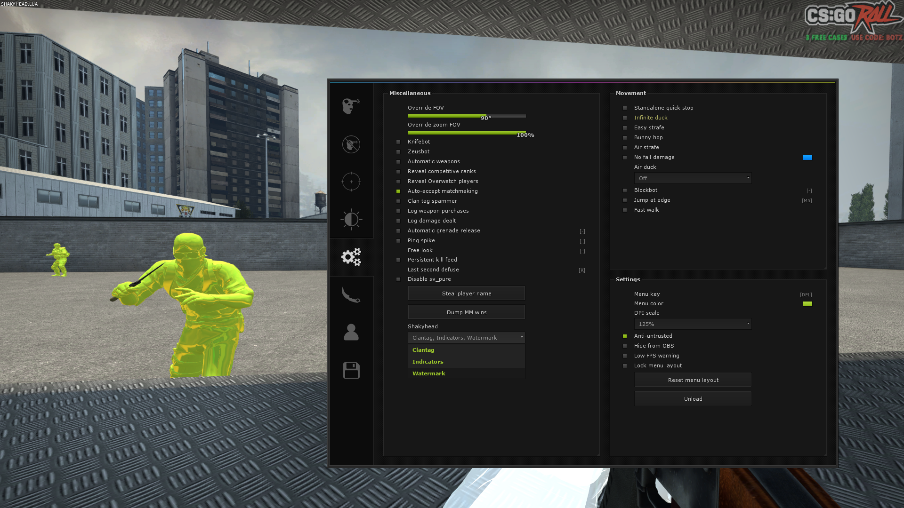

So you want to become a ShakyHead Master?
Here are the steps and requirements it will take:
- Current user of shakyhead.lua discord
- Good understanding of the English language
- Write a private application which include:
- Little bit of basic information.
- How long you have been cheating for?
- Why do you want to join ShakyHead?
- What other cheats have you used?
- What's your greatest achievement in CSGO?
- What other hobbies do you do? (GFX, Designer, Coder, ect)
- Have someone vouch for you.
Kartwheel Fake Lag
Kartwheel fake lag involves in using 6 tick fake lag and makes it extremely difficult for the opponent to hit

ShakyHead Indicators
ShakyHead uses simplistic and significant colours to ensure that the indicators are user-friendly.

SlenderMan AntiAim
ShakyHead has created a custom AntiAim, which is named SlenderMan. This is a very difficult fake yaw to hit from the opponent.

Shaky Movement
ShakyHead offers a variety of different types of walks which are used to enhance the amount of missed shots taken by your opponents.

ShakyHead Menu
ShakyHead menu and miscallaneous features for use when LUA is enabled.

ShakyHead Clantag
ShakyHead has a simple name and uses the gamesense effect for the LUA clantag.